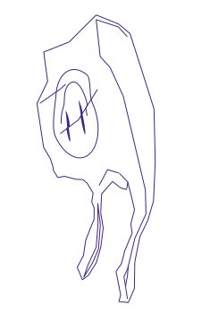

How many times do we throw something in the bin hoping it will be recycled even if we are definitely not sure about it?
This attitude is called wishcycling.
According to environmental scientists, wishcycling consists in putting something in the recycling bin and hoping it will be recycled, even if there is little evidence to confirm this assumption. And it’s a fairly widespread behavior with harmful consequences.
To help you stop, we prepared the ultimate Wishcycling guide for Berlin.
Recycling is the process of converting waste into new materials and objects. Recycling waste has various environmental benefits, such as preventing pollution or conserving natural resources. Its importance has been increasing over all Western countries, especially since the 70s as a way to save energy.
Municipal waste in particular – which covers every type of waste collected within municipalities, from office supplies to market cleansing waste, including the one generated in our households – is a great source of secondary and raw materials and needs to be carefully sorted, handled and disposed of.
Within the EU, most of the countries have significantly increased their municipal waste recycling rates since 2004. The trend varies greatly, starting from Montenegro recycling only 5% of their municipal waste and ending with Germany, where up to 67% of the waste is recycled.
Despite this positive trend, the overall volume of waste generated per inhabitant is currently increasing . In 2020, 9 kilograms extra of waste per person has been generated, going from 469 to 478 kilograms. In Berlin alone, 242 kg of waste was produced per household. If properly paired with structural change and considerate policymaking, recycling is an essential strategy to deal with the increasing amount of waste generated.
67%
of the waste is recycled in Germany
More importantly: knowing how certain types of waste need to be disposed of and how to correctly place them in the garbage is key for successful recycling strategies as well as for understanding how waste is taken care of after us.
First, by misplacing waste the risk is to contaminate the waste stream with non-recyclable material and the process gets more complicated and costly, requiring extra labor and damaging sorting systems. Lack of awareness on how certain waste should be treated also jeopardizes our ability to ask for change at a broader level and to be aware of which policies and regulations should be enforced.
In Germany a lot has been done since the beginning of this century to improve waste management policies. For instance, regulations on landfills have been largely updated to better organize the monitoring and treatment of waste. However, according to NABU, still a large quantity of household waste is incinerated rather than recycled. This is due to costs, for municipalities it is still more convenient to burn waste rather than properly recycle it.
Unfortunately, recycling rules vary a lot depending on the location. Single municipalities can even have different rules if compared to each other, depending on which sorting infrastructures they can rely on.
For this reason, we prepared an interactive guide to avoid Wishcycling. Will you be able to spot all the difficult-to-recycle objects in the room and discover which bin they belong to?
Move around the kitchen by scrolling or dragging.
Find the items that are hard to recycle.
Discover how things should be thrown away and separated.
Text boxes give you important and additional information about each object.
You can reload the objects by clicking on them or using the memory history.